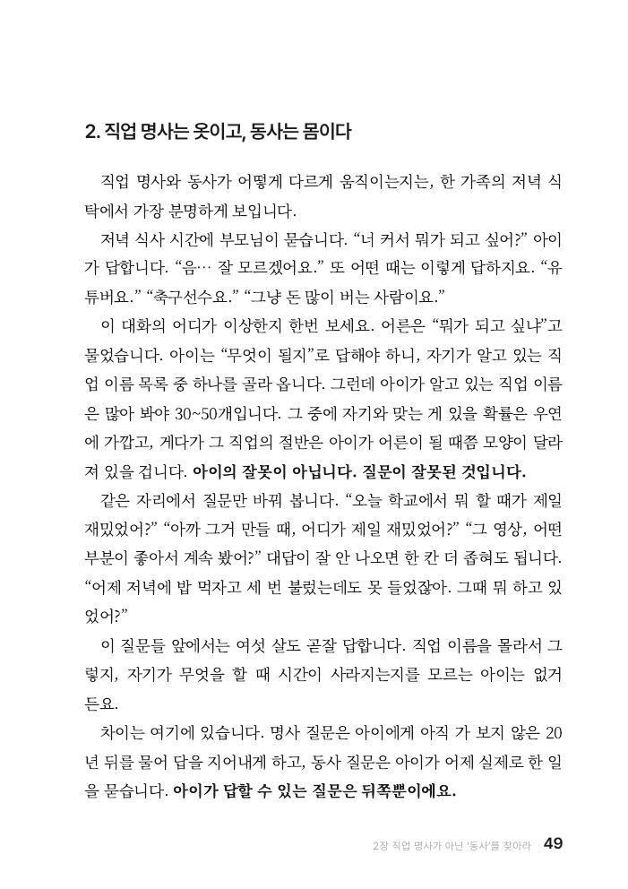
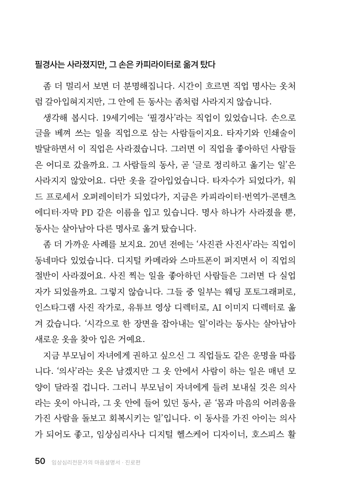

직업 명사는 옷이고,
동사는 몸이다
무엇이 되고 싶은지보다 무엇을 할 때 즐거운지 물어봅니다.
점수의 시간은 짧고,
흥미의 시간은 깁니다.
AI 시대, 진로 방향 찾기

흥미와 성향, 성격을 함께 읽으며 AI 시대의 진로 방향을 살펴봅니다.


무엇이 되고 싶은지보다 무엇을 할 때 즐거운지 물어봅니다.
좋아하는 것이 없다는 말 앞에서, 경험의 역할을 살펴봅니다.